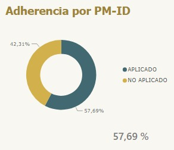
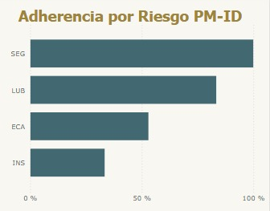
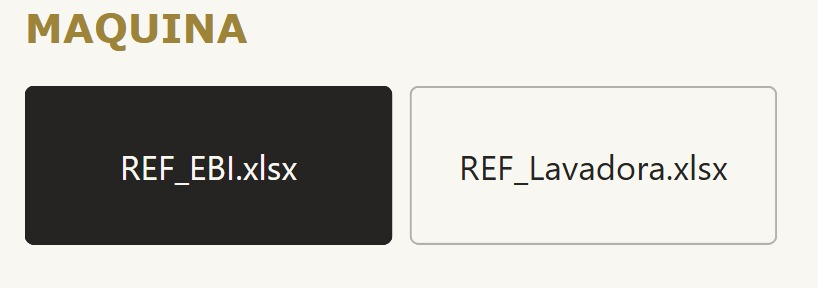
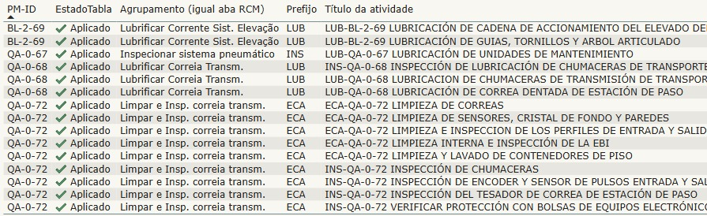
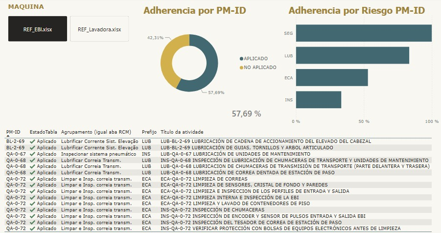

MANTENIMIENTO AUTÓNOMO
Resumen del proyecto
En el area de envasado de una planta industrial, se busca que cada operador tenga la capacidad de realizar el mantenimiento de su area de trabajo, para ello se implemento un sistema de control y monitoreo de las actividades de mantenimiento realizadas y completadas. Se elabora un registro de las actividades realizadas, el cual es verificado y cruzado con la informacion de los mantenimientos realizados en el area de trabajo, para asegurar que se cumpla con los procedimientos y protocolos establecidos.
En este proyecto se implemento un sistema de control y monitoreo de las actividades de mantenimiento realizadas y completadas en un area de trabajo de una planta industrial, utilizando Power BI para la recopilación de datos.
Tecnologías utilizadas
- Power BI
- Excel
- Dashboards
Parámetros
Primero, se analiza que porcentaje de actividades de mantenimiento cuentan con información correspondiente y a que area corresponde, ya sean actividades de lubricacion, seguridad, limpieza y orden, entre otras. Se realiza un registro de las actividades realizadas y completadas, para luego ser verificado y cruzado con la informacion de los mantenimientos generales que deberian realizarse en el area de trabajo.


Tabla de Actividades
La tabla de actividades permite visualizar todas las tareas que corresponden a una maquina en especifico, es por eso que tambien se añade un selector de maquina. En la tabla se ve la información detallada de cada tarea y si se encuentra aplicada o no en el sistema para que el operador pueda realizar el mantenimiento correspondiente.


Dashboard
Se realiza un dashboard completo con toda la informacion recopilada, donde se puede visualizar el porcentaje de actividades de mantenimiento realizadas y completadas, asi como el porcentaje de actividades que cuentan con informacion correspondiente y a que area corresponde. Tambien, se añade una opcion para seleccionar la maquina a analizar, para asi poder visualizar la informacion correspondiente a cada una de ellas. Finalmente, se implementa una tabla para realizar la evaluación y comparación de las actividades de mantenimiento realizadas y completadas.
